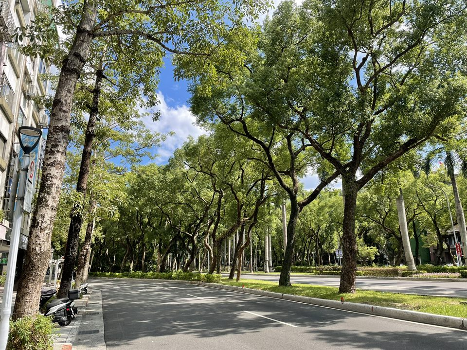
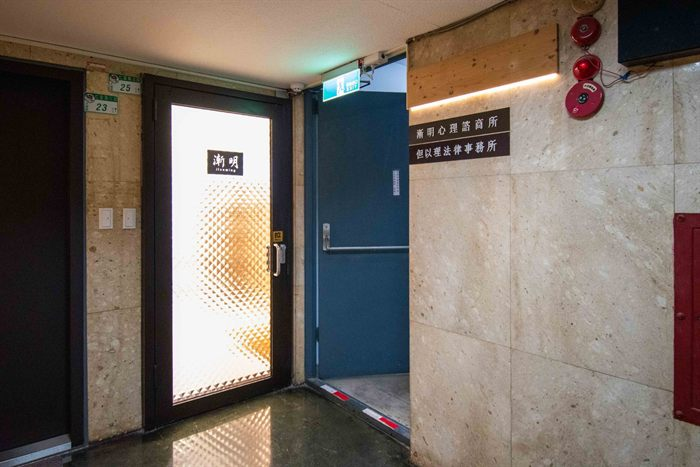

前往漸明

讓第一次赴約的你，安心前來
地址：106臺北市大安區仁愛路三段25號7樓之1（百齡大廈）
在 Google 地圖開啟
第一次到漸明
- 抵達百齡大廈並告知管理員「要到漸明」後，即可直接搭電梯到 7 樓。
- 出電梯後左轉，右手邊那間就是漸明（7 樓之 1）。
- 按下電鈴後請稍候片刻，心理師會親自為您開門。
捷運
- 忠孝新生站 6 號出口：沿新生南路直行至仁愛路三段左轉，步行約 6–8 分鐘。
- 忠孝復興站 2 號出口：沿仁愛路三段方向步行約 10 分鐘即可抵達。
公車
- 仁愛建國路口站（步行約1–2分鐘）：仁愛幹線、37、226、270、311、630、651等路線。
- 仁愛新生路口站（步行約3–4分鐘）：仁愛幹線、松江新生幹線、72、211、226、270、280等路線。
- 實際路線與班次請以公車動態資訊為準。
停車資訊
- 建國高架橋下收費停車場（步行約 2–3 分鐘）。
- 仁愛路沿線路邊收費停車格及周邊私人收費停車場。
- 停車位數量及收費方式依各停車場現場公告為準。